2025-02-01
奏為擬選聰穎子弟，前赴泰西各國，肄習技藝，以培人才，恭折仰祈聖鑒事。
曾國藩〈擬選子弟出洋學藝折〉同治十年（1871）
單純記錄一些在紐約的所見所聞還有心情，所以以意識流（俗稱流水帳）的體例寫作。
從 2024-08-01
到紐約到現在過一個禮拜了，記錄一下所見所聞跟心情。
來到紐約的第二天領略到紐約的物價，這個三明治花了我 $17；份量確實是很多，但是結帳的時候嚇到。吃下去之後覺得超好吃，可以說是 Subway 的超級豪華版（當然價格也是超級豪華版⋯），所以好像也還行，只是要分成兩餐吃，不然會被自己吃垮。但是這一個禮拜過下來（大概知道這邊的物價水準之後）覺得分兩餐吃其實算是很便宜，是可以常吃的東西，所以這週大部分午餐晚餐都是在這家店解決。已經把這家店的菜單拿回家，準備把大部分的三明治菜單都吃過一遍。

哥倫比亞的北方就是 Harlem，是有名的黑人區。從機場到哥倫比亞的 Uber 上經過 Harlem 就被警告說這邊比較危險，看起來也是有點恐怖。傍晚稍微往北邊走的時候就看到橋墩上有「COLUMBIA OUT of HARLEM NOW!」的塗鴉。哥倫比亞在 1896 年移到現在的校址（原本在洛克斐勒中心旁邊，更早之前在馬哈頓更南方），過了一百多年還是格格不入。走在路上也有明確的感覺，一旦往北到 125 街左右就明顯感受到街上的氛圍變得很不一樣。通常這種地方應該要仕紳化吧？或許是 Harlem 的基因太強了。
會往北走是因為要去跟一個朋友的朋友買地毯跟一些東西，放到房間變這樣：

後來又添購了冷氣（也是往北方走去買來二手的），落地燈是幹來的，基本上該有的機能都有了。
前面提到到 125 街以上氛圍就很不一樣，後來有天到時代廣場附近逛逛才知道什麼叫做都市：
其實時代廣場附近幾個街區（大概是 30 到 50 街多左右，這邊被稱為 midtown）都長這樣，那天也去看了洛克斐勒中心（看到 Tonight Show starring Jimmy Fallon 的看板）、中央車站（無聊）、第五大道（往南看滿壯觀的）。在附近還看到無印良品還有 Line 商店：

從外面看裡面全部都是東亞面孔，笑死。我家附近則是長這樣：
跟曼哈頓 midtwon 完全是兩樣風情，甚至都還沒去精華中之精華區 downtown。後來聽朋友說他覺得其實 80 街以上就有點 sketchy（哥倫比亞在 110 到 120 街左右），我算是同意， 80 街大概就是中央公園的一半的地方，往北就比較住宅、越北方越龍蛇雜處，往南則是無比繁榮（雖然路邊一樣不少流浪漢）。之後應該會盡量避免往超過哥倫比亞校區太北方的地方，多往南邊走。
這週花不少時間在整理家裏（打掃房間、廁所、廚房）跟處理一些行政事務（手機、銀行、social security number）。我有兩個室友，目前只見到一個（印度人，工程類 PhD），另一個暑假不在。印度人口音偏重，需要用力聽，但是人很好，很多東西願意跟我分享。之前有聽說印度人普遍衛生習慣不太好，印度室友感覺衛生習慣普通，不是說很不衛生，但是會放任廚房一些油污堆積在灶台上那種。我覺得這種好像跟一些在 Reddit 上面看到的美國人差不了多少，所以我也不會說非常差，但是算是到我無法接受的程度，所以這週花很多時間在打掃。之後應該是可以維持現在打掃後的模樣吧。
另外一件北七的事，今天室友煮午餐是煮鮭魚，我還特地問他說他打算怎麼煮（前天晚上他在半夜煎牛肉，他的作息不是非常規律），他說用煎的，我就說好。過半小時之後我再到客廳發現濃煙密佈，然後警報器就開始叫。我去廚房就看到鮭魚整個焦掉 = =。後來他叫舍監過來，舍監也沒辦法，就只能把所有窗戶都打開。我在開窗戶的時候腳抽筋（不要問我為什麼），因為要超用力開（不要問我為什麼）。幸好沒有什麼灑水器，不然我真的會把他打爆。整間房子都是燒焦鮭魚的味道，過了兩三個小時才消散。
來到這邊幾天才有點意識到自己要在這邊待好久，心情其實有點複雜。發現自己真的要開始為自己的生命負責了，而且是有學校保護的 easy mode 開始，又覺得自己頗草莓。最一開始幾天比較緊張，買東西之前都會跟自己對話好幾次說等一下要怎麼講。現在比較好了，有餘裕規劃一天要做什麼，而不是整天在緊繃的狀態。希望在開始認識更多人之後有更好的心境轉換。
最後附上哥倫比亞大學地鐵站的照片：
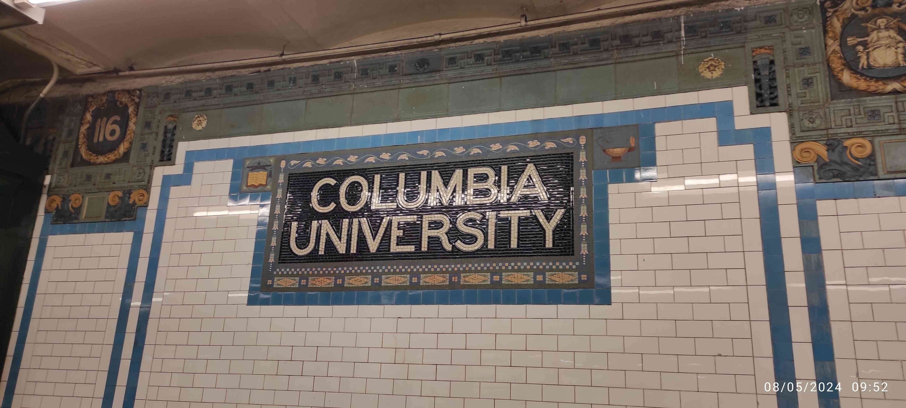
紐約的地鐵真的是又髒又臭，而且只有部分車廂是有冷氣的，沒冷氣就是坐在蒸籠裡面晃，可能錢都花在這個馬賽克上（幾乎每一站的牆面都是馬賽克）。因為還沒有學生證跟迎新導覽，所以只到校園裡面快速走過一次。等到可以暢行無阻的時候再仔細看跟拍照。
紐約也是很常下雨，而且下雨了就會蠻冷的，大概再20度左右。而且蠻多人不撐傘的其實雨也不小，特別是很多白人不撐傘不，太知道為什麼。
過兩個禮拜之後發現在紐約（我想甚至是整個美國）人種劃分是很明確的：像是速食店或雜貨店或做工的都是西班牙裔的，送外賣啊什麼或零元購商人的很多都是黑人，白人真的看起來大部分都在做高級工作，亞洲人也是。以下就是零元購交易市場，在中國城附近：
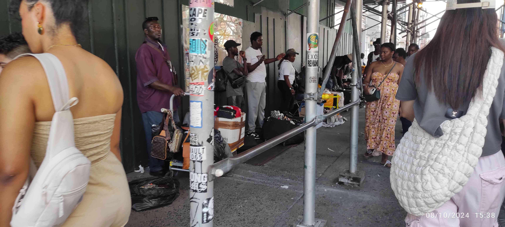
在哥倫比亞附近聽到很多中文，但應該是因為中國學生多的關係。這樣看來紐約或甚至是美國的確是一個蠻讓人覺得沮喪的地方，階級的不流動直接以人種的方式呈現給你看。至少在台灣大家看起來都一樣，所以看不出來？話說，幾乎都很哪裡都有講西班牙文的機會，果然跟我之前一個同學說的很像：「西班牙文是美國台語」。連紐約地鐵的官方告示都有英語西班牙語雙語。
這禮拜第一次煮東西，自己煮下來發現其實跟外面買的價格並不會差很多（但這是給定你把一個三明治分成兩餐吃的情況）。自己煮的話大概算了一下就是 $5 左右，營養比較均衡。範例：
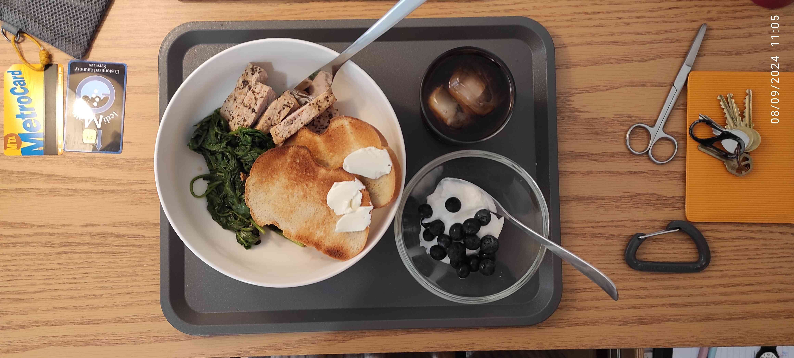
美國的豬肉確實有股騷味，但是我覺得我能接受。
紐約地鐵真是可以看到形形色色的人的地方。第一次在地鐵上看到猶太拉比，也有在地鐵上看到拉丁裔的爸爸跟女兒在賣零食討生活，真的是大熔爐。紐約猶太人真的很多，走在路上（特別是越接近金融區的地方）很容易看到公開配戴基帕的人。比較智障的是看到告示寫說「Subway surfing is dangerous, please ride in the subway」，看起來比較熔爐的地方也比較猴。逃票仔也是很多，而且這個感覺不分族裔，大家有機會就逃票？？但是我要更正一個上週的觀察，就是其實大部分地鐵是有冷氣的，只是不知道為什麼第一次做的時候剛好坐到沒冷氣的？害我對於沒冷氣的 prior 很強。
有天心血來潮去 IKEA，因此第一次到布魯克林區。看起來跟北曼哈頓差不多破，但是感覺比哈頓更「有機」一點：街道不是井然有序的網格狀，房屋也是歪七扭八？還看到倉儲挖寶王裡面會出現的倉儲。因為 IKEA 滿遠的，所以也第一次坐巴士。沒特別感覺，只是覺得這種東西好像是很久以前（70 年代？）台灣公車會出現的東西：

IKEA 東西好便宜，可能中國留學生也知道，店裡面超多中國留學生，到處都在講中文。回程的時候地鐵突然燈暗掉很正常，還看到有人把腳踏車鎖在把手上，很屌。
8/9 剛拿到學生證，拿到的第一件事就是去參觀學校附近的大教堂，非常壯觀的教堂，跟歐洲有得比，但是裡面有很多美國元素很有趣，例如這個有棒球、橄欖球、曲棍球圖樣的彩繪玻璃：

後來某天去了中國城，途中經過紐約大學地體站：

紐約大學真的是沒有 campus，滿無聊的，就是走在附近會突然看到紫色的旗子：
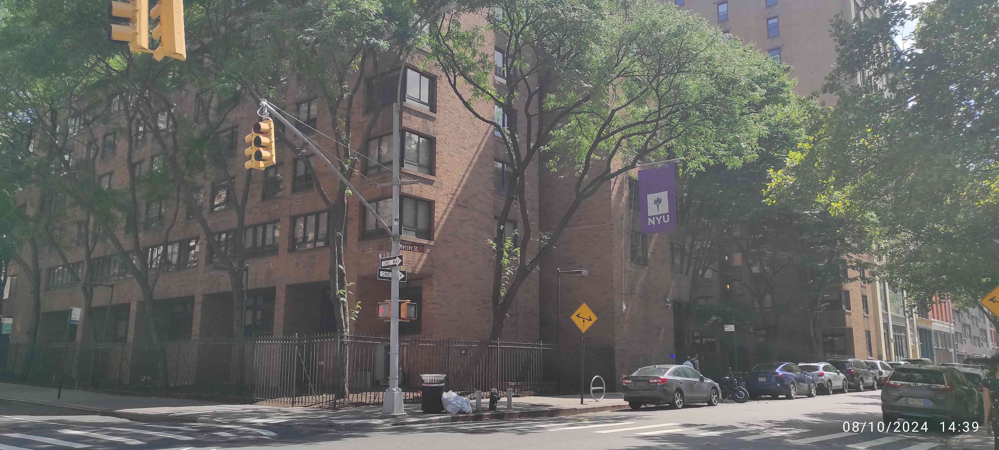
過一陣子又會看到一個，就這樣。而且途中第一次在大白天看到有人坐在路邊打毒品（針頭打到手臂），嗯。
中國城是個又髒又醜，而且被廣東話佔領，要是能避免的話不會想再去。倒是到處都是青天白日滿地紅，滿好笑的。


最後在附近謁見了中山跟仲尼之後便快速離開：


又過了一個禮拜之後發現其實曼哈頓 downtwon 分區也非常明顯：說不只是說「uptown 糟糕、downtaon 繁華」，因為中國城跟前面拍照到的零元購散貨中心都是在 downtown。我也因此發現其實哥倫比亞校區附近真的是很安全，感覺一切都光明磊落，又常有學校的公共安全小組（不知道 Public Safty 中文叫什麼）開車巡邏，而且又相對安靜，不失為是個好地方。
去完中國城就跑去金融區，其實金融區反而無聊，就是金牛附近都是人（小女孩沒了）：

旁邊看到一個川普建築跟紐約證交所（川普大樓除了斗大的 Trump Building 字樣就沒啥可看的，就不放照片）：

Meh，還去了原本世貿中心，現在是 911 紀念公園的地方。我是覺得頗無聊，沒什麼有趣的東西。這幾天發現紐約很難跟臺北一樣自己去逛？走在路上不是吃的就是一些賣垃圾紀念品的店。希望之後多認識一些人之後可以做一些比較有趣的事情。

晚上跟印度室友出去外面吃飯，第一次在晚上到哈林區吃披薩，正宗拿波里披薩，很不錯。然後發現他女朋友是蒙古人？？？滿屌的。哈林區其實晚上也不是說超級恐怖（但還是滿亂的），要注意就是了。
某天整個中午到晚上都跟某朋友還有他的一些台灣朋友在他家頂樓，滿開心的（過好幾天第一次講這麼多中文？）。以下是他家海景（河景？）第一排頂樓的樣子：

轉過身背後就是繁華無比的曼哈頓。第一次 shotgun、pickle ball⋯等，族繁不及備載。只能說才來沒多久就能在這種地方搞東搞西真是命好。
莫名其妙在一家超市（不是亞超，所以意外）看到伊藤園產地台灣的綠茶：

價格是一旁牛奶先生的三倍，但還是買了，好喝。
最後這幾天都在認真看一些計量經濟學的文章，所以沒做太多有趣的事。而且因為 Math Camp 從這禮拜一開始（線上），所以早上也不能亂跑。 Math Camp 真的是頗無聊，例如光是集合的包含關係、交集、聯集就講的一個小時。所以其實我都是在做自己的事，呵呵。但是至少老師跟助教（都是經濟博士生）人非常好，所以我也沒有太多抱怨，就當作複習一些基本觀念吧，而且之後可能會講的 Kuhn-Tucker 都快忘光的，還是要複習一下。
今天下午偷閒還是跑出來亂晃，看到熨斗大夏（整修中）：

其實原本是先去 MoMath，以為是超 nerdy 的地方（其實算是滿 nerdy），但是到了之後發現好像主要是給小朋友玩的（裡面有很多像是士林科教館的東西），就沒進去了。之後想要找看看紐約有沒有類似誠品這種文創類型的商店，但是我半個都沒找到。只要經過一些精緻的書店，所以才說紐約很難逛⋯。
最後附上一張哥倫比亞圖書館的照片：
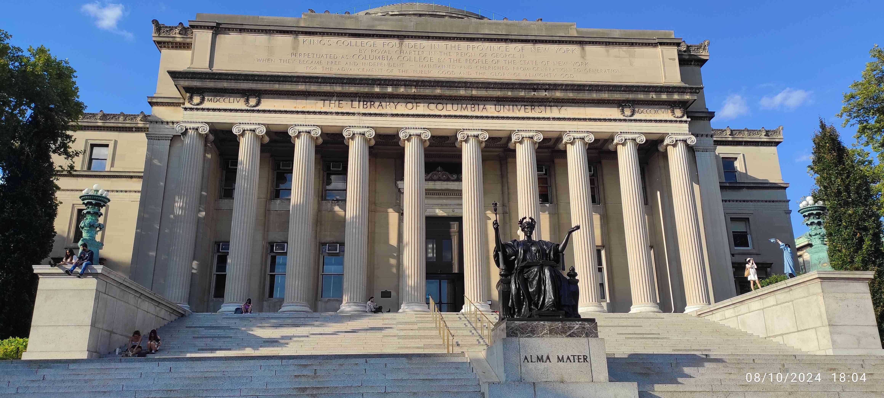
那天去看才仔細看到上面的刻字，滿霸氣的：
King’s College Founded in the Province of New York by the Royal Charter in the Reign of George II Perpetuated as Columbia College by the People of the State of New York when They Became Free and Independent - Maintained and Cherished from Generation to Generation for the Advancement of the Public Good and the Glory of Almighty God
讀完其實覺得滿感動的，但是同時又覺得有背景音樂，滿好笑的。
感覺自己越來越像是當地人了，比較不焦慮，也比較之後各種事情的處理方式，還打電話去跟洗衣機公司要存錯的 $15，真的是來紐約還是要當客家人。滿期待下週的實體 Math Camp，第一次見到之後朝夕相處的同學，下次再來人物誌。
再次體現美國語言多樣性，官方的地鐵公告都要三語，好笑的是中文是晶晶體：

這週開始實體 Math Camp，終於見到同學了，但是也重新發現社交真的很累人。不是說英語說得不好，而是要一直尬聊真的很燒腦，要一直想一些雞毛涮皮的事情來填空，諸如：「你有沒有寵物？」、「你喜歡什麼音樂？」⋯不及備載。當然也有比較務實的：「到底什麼時候需要給小費？」，至少這個時候非美國人就可以統一戰線討論公制系統的優越性。
好，人物誌。這屆哥大經濟系的人總共有 31 個，據說這是正常大小，前幾年比較少（大概剩 16 個）純粹是因為 Covid。班上大概 1/3 是美國人，剩下來自世界各地。中國人 4 個、印度人 2 個、馬來西亞人 1 個、巴西人 3 個、加泰隆尼雅人 1 個、義大利人 2 個、奧地利人 1 個、韓國人 1 個、西非法國人（忘記他說是哪個國家了，但是他大學研究所都在法國完成）1 個、日本人 1 個、芬蘭人 1 個、波蘭人 1 個、俄羅斯人 1 個、智利人 1 個。性別比倒是非常可悲，沒記錯應該只有 5 個女生。
中國人意外的熱情？就是不會自己搞小圈圈，甚至有一個比美國人還多話，然後也會講德文，頗有趣；有一個還跟我講很羨慕當台灣人可以去小巨蛋聽演唱會，因為他很喜歡蔡依林；而且沒人跟我抬槓區域政治問題，所以很不錯。巴西人好像平常沒有說特別熱情，但是這週五在酒吧的聚會就是他們揪的，所以算熱情？義大利人倒是一直講義大利文，比較小圈圈。奧地利人也是話很多，然後他對國共內戰有不少了解，有驚訝到。在酒吧的時候才第一次跟加泰隆尼雅人對話，第一個話題不外乎區域政治。法國人口音最重，也是全班唯一一個黑人，是第一個說他注意到中文使用者全部都不使用原本的名字而使用另一個英語名字，呵呵。日本人說他有來去年的 AASLE，念早稻田，但是是大阪人，所以當我說我只去過關西地區時非常高興。芬蘭人長得超級芬蘭人，頭髮金到快要變成透明的。
再來就是美國人。美國人普遍愛講話，但是最愛講話的不是美國人。感覺在這個 program 的美國人也比較不驕傲，外國人調侃美國的一些事情的時候他們非常理解（像是小費文化）。而且好多美國人都在聯準會工作過，有兩個之前就在紐約聯準會工作。美國人不是最愛講話的原因是他們在這裡可能本來就有朋友圈，但是外國人普遍沒有，所以可能比較急於交朋友？
但是總體而言大家都非常友善，但是感覺沒有天才類型的人，到時候看看吧。
Math Camp 滿無聊的，基本上都是你有上大學就應該要會的東西。寫作業花一些時間，但是就是每週10題，所以負擔不會太大。唯一之前沒有太認真學過的東西只有下禮拜要講的 correspondence 吧，當然在個論上都講過，但是不太了解一些相關的數學性質。

其中一天去 orientation，滿無聊的，花超多時間再講性騷擾防治跟 consent，可能在美國真的是大問題吧？或者是在台灣也是大問題只是沒有這樣超正式的官方宣傳？場地倒是非常豪華，是舊圖書館，現在是行政大樓：
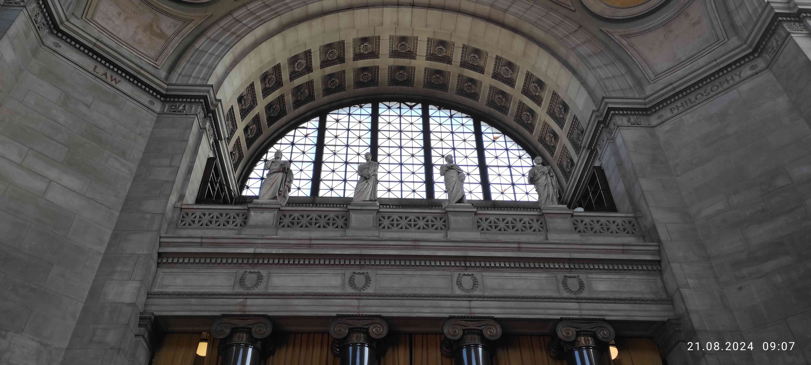

週五跟幾乎整個班的人到酒吧喝酒，蠻不錯的。有趣的是酒吧是在一艘船上，所以不知道是自己醉還是船在晃，呵呵。然後喝完酒之後跟一個美國人去買 Chipotle 其實真的滿好吃的，特別是在有點微醺的狀態。而且也不是說很貴，大概就 11 到 15 塊左右，讚。
今天還跟有些人去哥大的一個美術館，但是展覽偏無聊，太現代，不太喜歡。但是後來又去逛到有名的 Apollo Theater 那邊，有歷史文化感，而且走在路上還看到曼德拉的紀念牌，真的酷。

然後晚上到一個在長島上的地方 Flushing 跟台灣朋友吃烤肉，到了才知道那便是所謂「新」中國城，比曼哈頓上的更亂，而且顯然這邊是比較「後來」才來的人，到處都是簡體字。我們去吃一個烤串，是滿好吃的，價格也不會太貴，但是進到店裡就被用中文問幾位蠻好笑的。
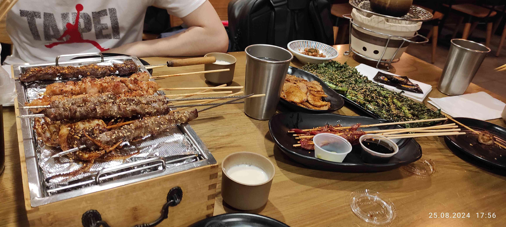
但是這邊真的有點亂，短期也不會想來，而且其實也沒什麼特別的，只是因為台灣朋友要搭飛機所以才來這邊離機場近的地方。前幾天也跟他們去吃一家韓式料理，吃到這個炸魚，跟台灣自助餐吃到的完全一樣，家鄉味：
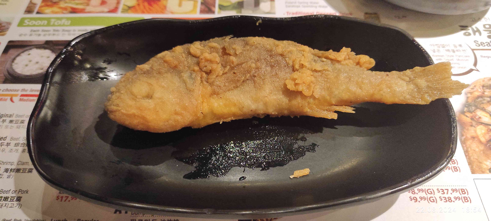
這是某天再來走去拍的卡內基音樂廳，在整修，所以滿廢的：
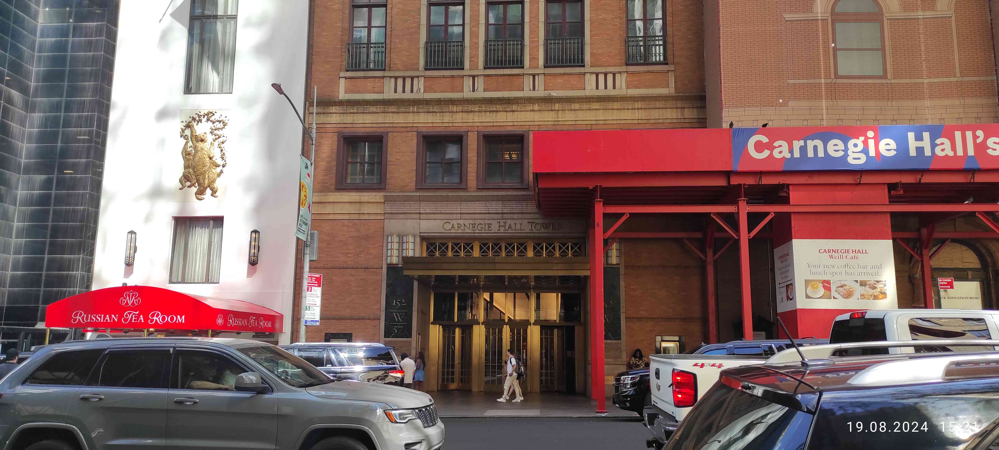
但是走到那邊途中有看到中央公園的馬，讚：

這是跟哥大密切合作的猶太神學院，1920 年代建成，上面寫著斗大「And the Bush was not Consumed」，非常猶太：

某天去坐渡輪，天氣跟風景都超讚：

坐度輪是專門跑去看這個著名的拍照景點，但是旁邊藍色鷹架超級大，很煩，不知道為什麼我去的地方好多都在整修。照理來說在橋墩中間可以看到帝國大廈，但是被冰淇淋車擋住，真的很煩。

最後附上這幾天才拿到的紐約市立圖書館卡，滿好看的，有鑰匙圈也有卡，覺得自己更像是紐約居民了。
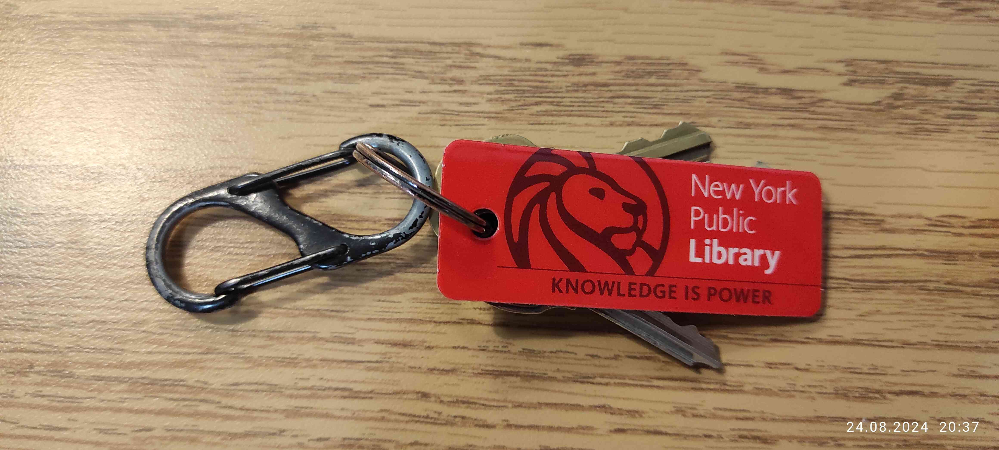
總體而言這週真的是社交能量消耗殆盡，希望之後聊天可以不要一直講一些雞毛涮皮的無聊事情。可能是之前在台灣朋友都太奇怪，整天動不動就是誠意正心跟虛假不虛假。可能我要努力成為這邊儒家的使徒吧。
這週好是大學部報到，所以人越來越多。也看到以色列對抗巴勒斯坦的示威又有零星的開始，遠遠的就可以看到以色列國旗還有很多猶太人：

原本以為猶太人是支持以色列，但是走近一看發現不是：
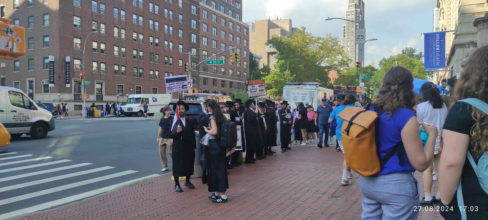
然後附近超級無敵多警察，呵呵。最後沒發生什麼事就是了，真無聊。
發現好像都還沒放一些學校的照片，今天特地去拍了一些。這是校園裡面的小教堂，滿精緻的，據說一些哥大的學生會在這裡結婚。

這是數學館，名字就叫 Mathematics，其他建築都是有冠名，像是 Pulitzer（我也是這禮拜才知道普立茲攝影獎在哥大頒發）。有人笑稱因為唸數學的人都太窮沒有人有錢可以冠名，所以只能叫 Mathematics。但是前面有草坪，所以讚。

據說這是很有名的「學者之獅」，必須說我沒聽過，而且不知道為什麼這獅子很瘦。

這個角落很有名：

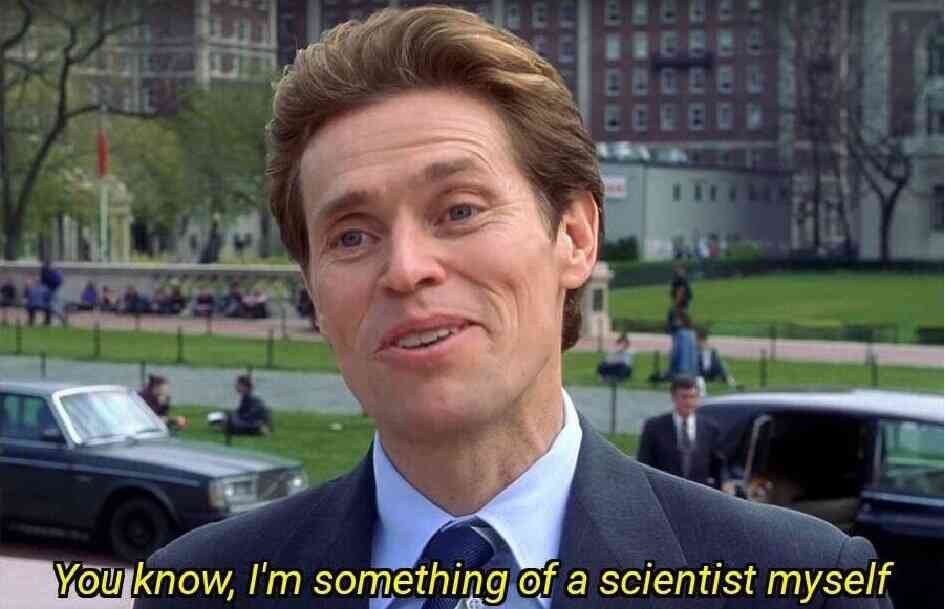
嗯。就在現在主要的 Butler 圖書館旁邊：
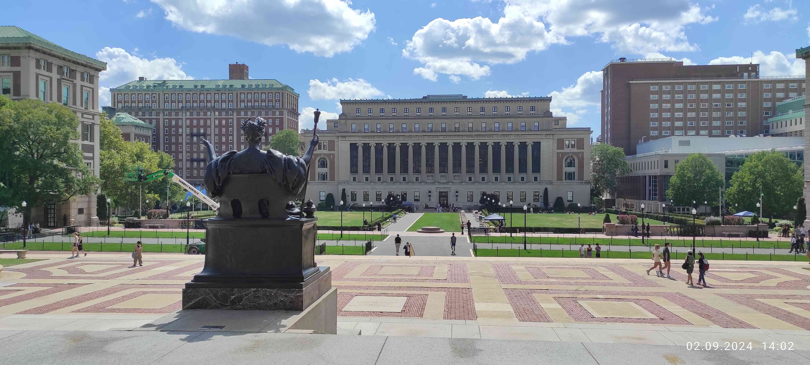
內裝很 old money，而且圖書館裡面有胡適的畫像，下次在去拍：

這個週五 Math Camp 剛結束。 Math Camp 結束是考了一個試，在家裡考，說是說不能翻書，但是完全沒有監考；題目倒是簡單到翻書都是浪費時間就是了⋯。一考完試就跟一些人去跑步（要逼自己去運動，我甚至還跟他們去打籃球⋯），聽到一些人說題目很難，我覺得難以理解。
參加了不少社交活動，如果我在台灣都覺得自己缺乏對於流行文化的認知，到這邊真的是被放大一千萬倍。大家好像什麼影集或電影都有看，什麼明星都知道，什麼音樂都有在聽，什麼運動都有在跟。有天我被邀說要不要去看網球公開賽，說票價現在降到 $100 以下。原本想說就當作體驗去看看，但是後來票價突然飛漲到 $150 以上大家便作罷，最後是到某人住處看直播。美國人真的是對於運動有很強的堅持，只要談話中有人一提到就會至少花 30 分鐘講個痛快。歐洲人跟南美洲人也是，特別是講到足球更是滔滔不絕。我只能在旁邊笑笑的。大家對於音樂也是有非常多瞭解，各種聽團跟邀去演唱會的，只能說我興趣缺缺。或許是在台灣的朋友太包容我對於音樂流行文化一無所知，聊天的時候都可以不用講這些。
另外美國人好像對什麼東西都可以編出一個偏好，就是無論問題是什麼，都可以🦐講個至少一分鐘。像是在酒吧有人問我喜歡什麼音樂，我就覺得有點答不上來，因為感覺自己沒特別關注誰，就是隨便聽聽而已。但是美國人的回答不一樣，會說自己個 playlist 是一大坨東西什麼都有，然後扯到說這樣在健身房會突然有難過的歌害他很難健身，然後再扯到說有他有一些電影的 soundtrack 很喜歡，然後就可以扯到電影。其實總結一下就是他也沒有特別關注什麼，但是就可以講一大坨。越來越理解為什麼 TOEFL 的口說是設計成這樣，因為美國人就是明明也沒什麼高見但是就可以滔滔不絕⋯。
Math Camp 考試早上結束，我中午去跑步（差點死掉），下午去野餐。氣氛是滿不錯的，但是又是大家瞎聊時間，講了一整個下午 = =。最後都是跟日本人講話，因為感覺跟西方人講化真的累，隨時都要準備噴一大坨，主題都不外乎運動、音樂、電影，沒有一個我特別在意的東西。後來跟日本人決定隔天去大都會博物館，到了發現門票不是對學生完全免費，但是你愛付多少錢都可以，只要在 \(\mathbb{R}_{++}\) 都行。進去之後發現我對於大都會有錯誤的期待，不應該把它當作大英博物館或是羅浮宮看待。因為要比從中東或非洲偷來的東西比不上大英博物館（但是這邊有一個很酷的埃及小廟），要比歐洲傳統的藝術品又比不過羅浮宮，都是一些有名的畫家的不有名作品。

但倒是有不少跟美國相關的東西就是了，像是這個。畫框也超級美國，滿好笑的。

去完博物館去買東西，人生第一次看到手推車有專用電扶梯，不愧是美國，跟偷懶相關的東西都不讓我失望：

這週也把申請 SSN 的事情搞定了，其實就是人過去把文件給他而已。接洽我的是一個感覺英文說得不太好的華人大媽，滿奇怪的，但是我記得在預約時間的時候他確實有提到你可以選擇用中文溝通，所以她可能就是扮演這種職責吧。後來經過法院，看起來頗氣派。
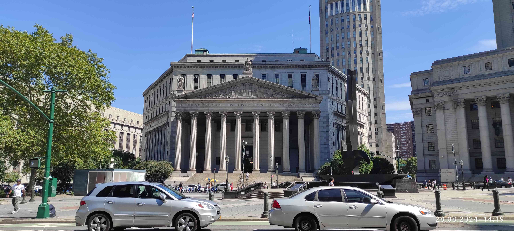
上面刻字：
The True Administration of Justice is the Firmest Pillar of Good Government
他們好像真的非常喜歡在建築上面刻一整句話，但是又都是英文，真的很美國精神，自詡為現代的羅馬共和。
昨天去一些比較的景點。其中一個是愛爾蘭飢荒紀念公園，這邊重現了一個破爛的愛爾蘭平房，紀念那些因為飢荒所以移民來美國的人：

然後附近有一小片柏林圍牆，下面有個小牌子寫說這是德國領事館送給這個「公園」的，不是送給美國或紐約市，有點意義不明。

最後附上今天午餐照片：

廚藝沒什麼進步，進步的倒是知道可以去買日式調味粉灑在菠菜上。明天就要開學了（今天勞動節所以偷閒一天），而且第一堂就是早八，累。
已經開學超過一個禮拜了，還沒寫紀錄，趕快來補寫。
開學到現在都滿無聊的，個體、總體、計論都是已經上過的東西，只有總體感覺會教得比較扎實，其他都超無聊。我還有上一門 Gelman 開的統計學課，內容比較務實，基本就就是講授統計學的智慧而非技術。 Gelman 是個非常注重教學的人，所以上課都很好玩，有很多實作跟討論的環節，受益良多。感覺自己之前都在學統計學的技術，非常缺乏統計學的智慧，所以非常喜歡堂課。只是有點不想寫作業，所以考慮旁聽。
目前只有個論有出作業，超級多 = =。一個禮拜五題，一題有五個小題，寫到快發瘋。但是有幾題算是有趣，之前沒做過的題目，所以還算是不錯。感覺得出來這邊的老師對於教學內容有非常多得的了解，講話都言之有物，面對問題也是對答如流，不愧是哥大。但是哥大第一年沒有研究室，所以不像是在台大大家下課後就可以在研究室鬼混。
說到鬼混瞎聊，我覺得社交還是一個小難題，特別是面對美國人。總感覺不太容易插上話，可能跟我講話的習慣有點關係。我通常會習慣等別人講完之後再回答，但是歐美人喜歡把話題岔開，所以很常時候等我想到回答之後話題已經跑走了，以至於不容易同步加入閒聊話題。當然討論上課內容是另當別論，要當 nerd 我還算是滿稱職的。
因為是開學週，學校有不少迎新活動，所以蹭到很多免費的食物。感覺如果不太挑的話，一週中有三四餐吃免費食物不會太離譜。而且這邊經濟系真的很多給博士生的活動，像是週五我們有個超級屌的晚宴，週六還有大地遊戲，玩完還去酒吧免費喝酒吃東西，真的是來度假的。話說去晚宴的時候才發現中國人真的超級多，走來走去都聽到在講中文。那天我倒是中英文都沒說幾句，幾乎都只跟同梯講話而已，大部分時間只有在聽。
禮拜天第一次跟美國人看美式足球。朋友中有一個是邁阿密海豚對的忠實粉絲，所以他就號招大家去他家看球賽。我覺得美式足球算是好看，整場比賽不會太長，中間也有很多亮點，但是比較奇怪的點就是鮮少傳球，都是大家抱的一個東西跑來跑去，跟橄欖球很不一樣。但是基本上整個週日下午就廢掉的，美國人感覺不只是浪費食物或物資世界一流，浪費時間也是世界一流。那天因為某個同學生日還同時做的一個起司蛋糕（很厲害，超好吃），隔天大家在去中央公園吃蛋糕。真的是來度假的⋯⋯。
這週就沒什麼照片了，附上我們晚宴杯盤狼籍前的樣子：

補記：忘記紀錄一件事：上週第一次走在學校的路上看到有人被 catcall。是一個剛從地鐵站走出來的黑人女性，被一個站在餐車旁邊的黑人男性 catcall。我剛好就走在那個女生後面，所以聽到蠻完整他講什麼。基本上就是說他很可愛很性感什麼的，我看那個女生一開始也有一點點嚇到，那個女生走很遠之後那個男的還是一直講，開發出一些奇怪的聲音，真的是滿糟的體驗。特別是在紐約這種地方，路上很多奇怪的人，感覺隨時都有可能攻擊你，特別是在被 catcall 之後機率感覺特別高。雖然說感受真的很差（當然我相信作為那位女性的感受更差），但是好像也只能道德譴責他，沒辦法做什麼有效的約束。
作業很多，所以無法每週更新⋯。每週都有個論作業，快要累死了，而且題目都超長，也不是說超級難（有些確實不容易），但是超級無敵花時間，都不知道其他沒學過的同學怎麼熬過來的。（好啦我知道，要嘛看以前留下來的答案，或是問我😂）其他的作業到是先對來說比較簡單，只是要花時間做而已。
上上個週末為了慶祝一個人生日不少人一起去中央公園跑步，跑完之後去吃貝果。我是第一次在紐約點貝果，先問了一下美國人哪個是經典，她就推薦了燻鮭魚，確實超好吃，只是很貴就是了，花了我 23 鎂（加咖啡）。

上週五去吃印度菜，但嚴格來說是中餐跟印度料理的混合體，我看菜單上是說因為有中國移工去印度，所以出現這種料理形式。但是基本上就是前餐偏中式，主餐就是烤餅配醬料。我覺得他的烤餅我有驚艷到，前餐的部分也是另外意外的道地，總體來說非常滿意。之後說好每週都要有人帶大家去吃自己家鄉的料理，我目前是打算帶大家去鼎泰豐，呵呵。然後這週跟大家聊天又更加順暢了，但是也透露出我偏自由派的本⋯。在吃完印度餐之後大家在酒吧聊天，然後叫討論到政治光譜，就突然說道我應該是出現在右下角⋯。我知道我在跑步那天有跟別人講到一些政治，但是真的是有這麼明顯嗎 = =。
隔天週六晚是跟班上的中國同學去吃中餐，雖然說是川菜，但是滿失望的，因為超級不道地。一走進去發現裡面很多白人就感覺不太妙（印度餐廳裡面的顧客倒是幾乎都是印度人，過關），讓我有點印象的菜只有甜品中的湯圓，非常的上海味，我喜歡。後來吃完之後剛好路過一芳，大家就順便買了。結果我拿到之後就順手把吸管套綁在吸管上，然後他們全部以異樣的眼光看著我，說沒見過有人這樣做。我說這樣垃圾就不會飛走，其中一個人就說他要把這個習慣學走拿回去炫耀，說這是正宗台灣喝法，哈哈哈。
上上週還坐船去了 IKEA，沿途風光確實不錯，但是時間還是很久（時間要快兩個小時），所以應該不會常常去。


而且這邊 IKEA 的餐廳實在是乏善可陳，跟台灣的完全不能比。以下這樣就花我 18 鎂，真的是不太 ok。
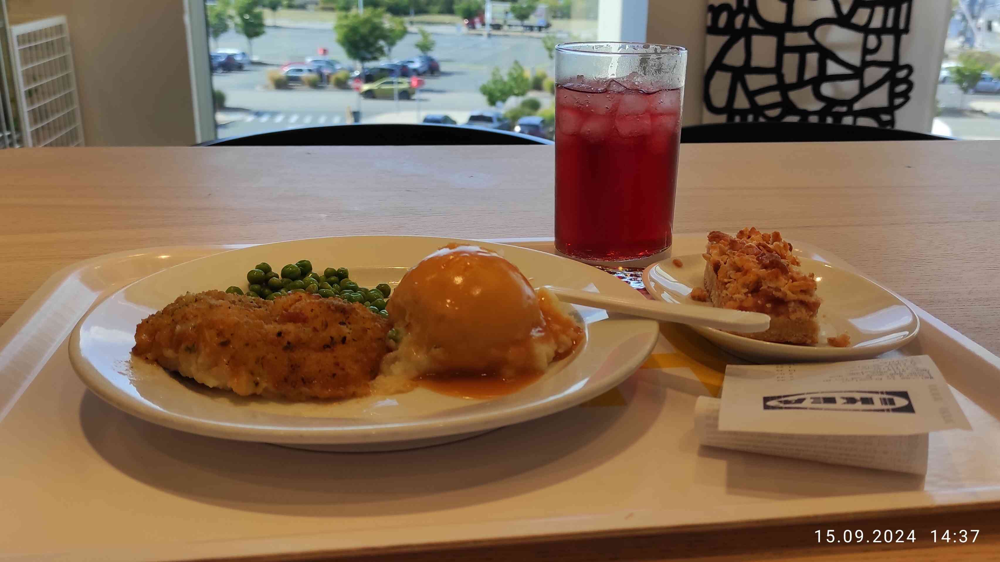
然後又看了更多美式足球，還看到有人當場腦震盪，其實真的不太敢看。但是現在算是滿了解美式足球的規則，接下來就是要開始記球星的名字了。
另外上週給 cohort 每個人發一台 iPad，是退休的 Jagdish Bhagwati 教授送大家的。感覺自己德不配位，還不知道 Bhagwati 是誰，一查之後嚇一跳，覺得自己更是無面目見江東父老。感覺現在我就差換一台 iPhone 就是 100% 的頻果人了，呵呵。
最後因為今天第一次算是製作出能吃的照燒雞腿，拍照以茲紀念。
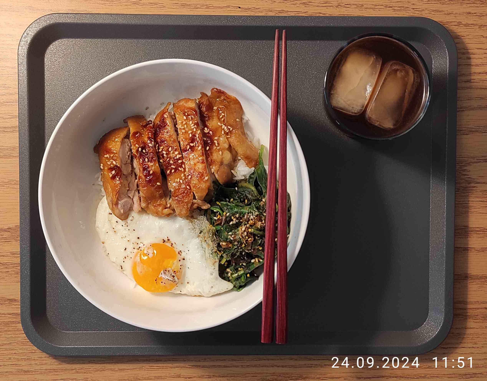
下禮拜就叫期中考了。但是發現其實在考試之前好像飯而還清閒一點，因為沒什麼社交活動，哈哈哈，不然平常假日不是在吃飯酒吧就是在看美式足球。
上禮拜跟上上禮拜都超忙，因為個論、總論、計論還有數量方法作業一起來。個論作業量大而且又做一些毫無意義的事情，像是手算一大堆效用函數的 Slutsky Matrix；總論作業寫 Matlab 快煩死，幸好有以前做總體的同學大方分享他的 code；計論作業中規中矩，就是我覺得大二學生就應該會的東西；數量方法作業讓我回憶在上大學數學課的作業，像是證明 determinant 的 characterization。所以這樣來說還是數量方法教的東西最踏實，呵呵。
既然要期中考了，簡單說一下學了什麼好了：
說實話目前沒有學到什麼新東西，但是還是很忙，因為作業還是要寫⋯。至於期中考我不是太擔心，除了對於上課內容掌握度有信心之外，感覺在這邊因為考試成績不好刷學生超級不符合學校的利益，因為在這邊第一年是不需要當助教或是研究助理的，所以如果刷掉的話等於學校第一年的錢就打水漂了。對學校來說，把學生留住好讓我們在第二年之後開始為學校做牛做馬當廉價勞工才是最佳解。而且還聽說其中一個今年這麼多人的原因是前幾年因為疫情所以博士生人太少沒人當助教，哈哈哈。
好久沒記錄了，所以從早一點開始講。上次紀錄後沒幾天就拿到紐約州的 ID 了，沒想到拿到後沒幾天就派上用場。那天因為慶祝我們波蘭同學的生日去紐約的小波蘭（跟中國城的概念類似）吃飯，就吃波蘭傳統料理。但所謂波蘭傳統料理無非就是一大堆馬鈴薯、燉肉、蔬菜湯，所以說實話沒有太新鮮，但是的確是不錯吃。吃完之後我們決定買一瓶伏特加去公園喝，結果我就喝到吐了 = =。應該是因為沒有用杯子直接對瓶嘴，而且又在短時間喝太多所致。反正他們陪我回去的時候還看了一下 ID 說我的住址在哪⋯。嗯，這個故事的結論就是伏特加不要直接用灌的。
我們 cohort 感情不錯，的確也有在執行每週都去吃不同的異國料理。當然波蘭菜是其中之一，後來我們去吃了巴西菜，也是非常不錯。之前只在台灣吃過巴西烤肉，但是沒吃過其他配菜，像是烤豆子、烤香蕉還有一些炸魚的料理。後來也去吃了泰式料理（雖然沒有人是泰國人，哈哈哈），一進去就發現老闆娘英文講得不太好，所以就代表到對地方了，過然還滿道地的，非常滿意。說到吃了，經濟系每週有一天還會幫第一年的博士生訂午餐。
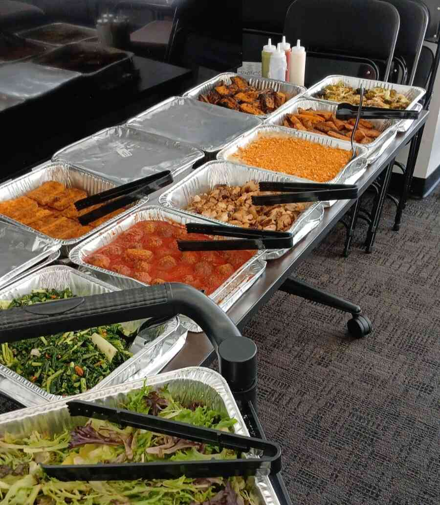
但是必須還是有一些美國人吃的東西我吃不習慣。我最看不懂的一次是吃沙拉，吃沙拉就算了，有菠菜、有芹菜、有胡蘿蔔、有花椰菜，但是沒有一樣菜式有煮的。生的華椰菜我真的是第一次吃，而且還基本上沒什麼切，一大朵一大朵的，搞得我好像是兔子一樣。後來把一整盤（盒子的長度跟我的臂展一樣）菠菜跟花椰菜帶回家煮了在配其他東西吃。還有一天下午跟高中同學到中城吃下午茶，滿高級的，呵呵。感覺得現在想得起來的事情好像都是在吃，哈哈哈。
平時沒什麼討論作業跟學術（或是我覺得沒什麼意思所以沒什麼印象，咩），但有次剛好討論到為什麼有個法國同學不吃肉，他就說因為他喜歡彼得・辛格，並且是個效益主義者。這個時候我就說效益主義就是共產主義。這個時候原本是一個自詡為女性主義的美國同學同意了，另外一那個波蘭同學也表示同意。果然是有有自由主義靈魂的美國人還有曾經在鐵幕下的國家的人會同意這種說法。倒是那個法國人，另外還有義大利人還有一個奧地利人表示不太同意，要我多解釋。但是後來這個討論就不了了之了，只是又奠定了我在政治光譜上的位置而已⋯。我也還沒太多機會發揚儒家的理想，只是跟芬蘭人稍微提過一點點，希望下次再講到類似話題的時候有機會發揮一點。
最近天氣轉涼，有時候早上只有 10 度左右，所以想去買些衣服。但是尺忖實在是很難找，即使是去 Muji 試穿女生 xs 的尺寸還是有點嫌大，看來是真的得要去童裝部門找衣服了。另外，10 月 7 日是蛤蟆絲攻擊以色列滿一週年，學校裡面也是敲鑼打鼓地有活動：
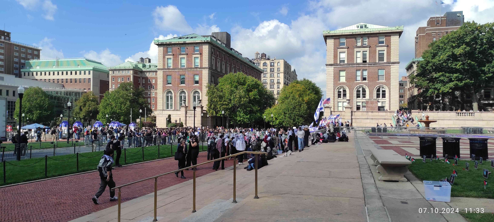
好笑的是你看以色列的國旗這麼大，左邊的好多攤位都是以色列方的。只有右邊小草皮上面差了一些巴勒斯坦的國旗，充分展現學校對於這件事情的態度，哈哈哈。
喔，應該是上禮拜吧，班上有同學已經發上 QJE，不得了了，那我在幹嘛？我在煎牛排：

做飯沒什麼進步，學業也沒什麼進步，但是牛排好ㄘ。另外感覺是要多拍點照，不然好多故事都沒有照片。
原本的周記現在基本上是每個月才寫一次了，而且不喜歡拍照的毛病還沒治好，所以只能靠腦補的了。突然想起來好像沒有放過這邊經濟系大樓的照片，跟台大一樣的水泥風格，不太知道為什麼。

自從上次到現在最重要的事應該就是期中考。現在是都考完了，除了數量方法之外都已經知道結果了。基本上沒什麼意外：
總結來說難度中等偏簡單，但是在考試的時候還是會小緊張，呵呵。現在新的 quarter 開始教不一樣的東西，總體進入貨幣的世界，非常有趣，畢竟是之前完全沒有學過的東西；個體在教一般均衡模型，超級無聊，畢竟是很老掉牙的東西；計論是個大雜燴，講了 Bootstrap、 IV、 GMM 之類的，但是教得很不仔細，都是講一些計算而已，幾乎沒有證明。目前最喜歡總體，不得了了，要變成總體仔了。這是考完個論去吃的 Shake Shack，也是在美國第一次吃 Shake Shack。不錯吃，偏過，然後奶昔甜死。

期中考結束那天下午（星期五）大家去附近的公園烤肉。烤肉這種事情果然是需要南美洲人才幹得來，又熱情又知道要怎麼調味，而且不吃肉好像會死一樣，所以肉很多，哈哈哈。（不像是跟我們一起上課的永續發展博士生，五個有四個吃 vegan（我甚至不知道中文是什麼））我基本上除了一開始副命去買木炭之外就是在那邊坐享其成，我們在公園喝酒的時候還有警察經過，原本意為我們會被驅離，但是他們好像也見怪不怪沒理我們？到傍晚的時候剩下的人越來越瘋，開始群魔亂舞，其中我們的非洲兄弟特別嗨（他應該是我們整個 cohort 裡面最神奇的人），嗨到寬衣解帶，然後把護照弄丟在公園裡面⋯⋯。隔天跟他住同一棟樓的人撿到他的護照（黑人問號）然後寄信跟他講（黑人問號？？？）？同一棟樓的人撿到也太剛好？但是我想想覺得說不定整個哥倫比亞就他一個人來自多哥，所以好想撿到就知道一定是他的？不太知道，但是這個人真的滿瘋的。像是照理來說我們在九月就應該辦好的一些入學手續他到現在（應該吧？）都還沒辦好，然後剛剛說到他弄不見的護照，他到現在都還沒去跟個人要（黑人問號）？
期中考結束之後有滿多活動的，像是我們去看紐約的萬聖節遊行，但是人有點太多，看得到的東西很有限。感覺美國人不分年紀真的很愛萬聖節，路上到處都是魑魅魍魎。後來大家累了決定去中國城吃晚餐（不知道為什麼大家對中國城都愛戴有加很愛去？這其實已經是我第二次在中國城擔任首席翻譯官了），我自然就成為首席翻譯。但是要論創意的話我還是不及我那個把「肉夾饃」形容成「Chinese Taco」的加泰隆那同學，其實也算是貼切。我還要解釋什麼是福州魚丸，真的是把我英文會話能力的 corner solution 都逼出來了。結束之後還有去夜店，美國人跟歐洲人在那邊真的是如魚得水，各種「接觸」跟喝水一樣自然，但是那種地方真的不是我該待的地方。當然還要提到我們的非洲兄弟，在路上一直拿哈利波特的魔杖亂指人，之後還手握啤酒對著警察說「Nice costume」，然後警察馬上回答說「Nice beer」，我差點以為這個沒護照的疑似非法移民老兄就要這樣橫死在美國街頭了。
其他活動有像是參加我們 cohort 的印度人辦排燈節的派對，有吃到一些有趣的印度食物（但是名字我是一個都想不起來，哈哈哈）；義大利人煮的完整 three-course meal（很厲害的鯷魚起司邊包前菜、南瓜燉飯、手工提拉米蘇），過然不愧為義大利人；還有跟紐約大學的經濟博士生一起去酒吧。感覺他們教的東西要比我們要扎實很多，哈哈哈，畢竟個論是 Rubinstein 教、總論是 Sargent 教，不扎實很難。而且他的計論是從測度論開始講，我覺得這樣才是正常吧。我也感覺他們的人比我們要更 nerdy 一點，然後有更 intense。可能是因為他們還是有資格考，而且他麼期中考是每週考一科（然後我們去酒吧那天他們剛好考完），所以聽他們說心很累。去完只感覺我們好像都在鬼混⋯。
另一件大事應該就是選舉吧。早知道就應該把所有獎學金都壓在川普上 = =。開票那天晚上大家在一個同學的住處一起看開票，他很有心準備了不同候選人祝題的調酒。但是慢慢看到川普票越來越多的時候美國人都坐不住了，所有美國人都支持 Harris。國際學生倒是不一定，或至少沒有明顯表態，也有人希望可以拿到綠卡，哈哈哈。哥大沒有示威遊行，在街頭也沒看到什麼異狀，我還以為紐約會很瘋。反正因為選舉所以放了四天連假我滿開心的～
博物館只多參觀了自然歷史博物館，我算是喜歡，畢竟是《博物館驚魂夜》的拍攝場地。買了一個新帽子，因為白帽子不見了，Sad。前幾天去打籃球的時候有人報隊，轉眼間就變然五比五的全場，我基本上跟個廢物一樣跑來跑去，一顆球都沒投進，隊友沒有在結束之後把我揍死就不錯了，呵呵。最近還看了同學送我艾因・蘭德的《Anthem》（因為亞馬遜多寄給他一本），上課前在看的時候被班上的熱衷於性別議題的美國女生看到，被以（半開玩笑的？）鄙夷的語氣要求「explain yourself」。但是我同意看艾因・蘭德確實不是什麼很光彩的事，畢竟作為作家他文筆不是非常好，作為思想家好向又不太夠格，更像是一個極端思想的宣傳部長；要是我在路上看到有人在看艾因・蘭德我也會覺得他有毛病。歐對，非洲兄弟帶我們去吃 vegan 的法式料理（對，因為他認同彼得・辛格所以吃素），基本上所有菜品都是經典法式菜（像是紅酒燉牛肉、烤田螺、鵝肝⋯⋯之類的），但是除了 Ratatouille 之外所有東西都是假的，雖然比我預期的要好吃一些，但是總體而言令人失望，哎。
秋天終於開始了，白天溫度在 0~10°C 之間（但是這幾天又比較熱，溫度在 10~20°C 之間），真的是秋高氣爽，不會覺得很冷。是內也開始有暖氣，但是有時候暖氣有點太強，又不能調節所以有點討厭。美國人告訴我他在暖氣太強的時後會開冷氣，果然美國人的問題需要美國人的解法，沒有什麼事情是累費解決不了的。但是也因為天氣開始變冷所以在試著買衣服，因為手太短所以目前找不到任何合身的襯衫，試過的所有牌子 XS 都太大。不知道知後要怎麼活。附上中央公園還有我家旁邊的教堂的照片，秋天真棒！

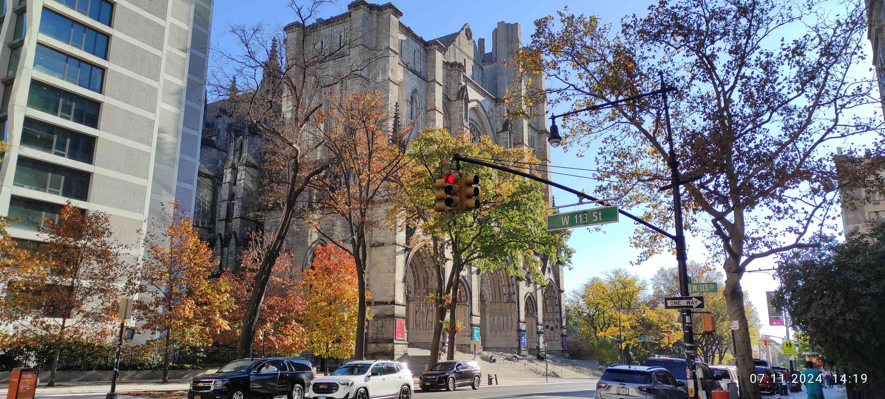
距離上次又大概過了一個月，期末考考完了，過幾天就要回台灣了，感覺又莫名其妙的把一個學期混完了。
原本打算在搭飛機之前把這篇寫完，但是玩得有點太累了不想寫，所以就拖到現在在飛機上寫。這次搭飛機真的有夠衰，這個最再說。
在上次寫完不久之後我第一次出遠門了！是坐著灰狗巴士一路到耶魯大學找在那邊做 predoc 的朋友。身為在美國的天龍人要離開紐約到郊區真的是特別有感觸，新英格蘭果然是我覺得美國應該長的樣子：大部分木造平房、少數石頭教堂、到處都是楓葉。或許是我 Family Guy 看太多吧，但是紐約跟整個美國比起來確實是異類。
到了 New Haven 之後給我的第一印象就是這邊怎麼這麼荒涼，好像這做小鎮除了耶魯之外就什麼都沒有了。或許是因為跟恩節前夕吧，但是我感覺因為校地面積非常大，所以人煙稀少好像很正常。另外主要的感覺就是這邊就是美國的牛津或劍橋，只是所有的建築都變大了，超級美國風格。像是我覺得這根就很粗：

我基本上花了一整天的時間在那邊看來看去，去了經濟系、圖書館、教堂、墓園、管院、還有美國都最大的（大學附設的）自然歷史博物館。挺不錯的，而且很明顯感受到耶魯真的是有錢，所有東西都很乾淨，舊的建築也不會很破敗，不像是哥大到處都東缺一塊西缺一塊。但是也沒辦法，畢竟紐約的物價跟 New Haven （應該）是不能比的。歐對，然後那邊有一家印度咖喱很好吃，呵呵。
接下來就是感恩節了。因為哥大大概放一個禮拜的假，大部分美國同學都回去過節了。剩下的國際學生就各自準備一些食物一起過感恩節（據說這叫做 Friendsgiving）。義大利人準備千層麵、日本人準備烏龍麵、中國人準備蕃茄炒蛋（？）之類的，
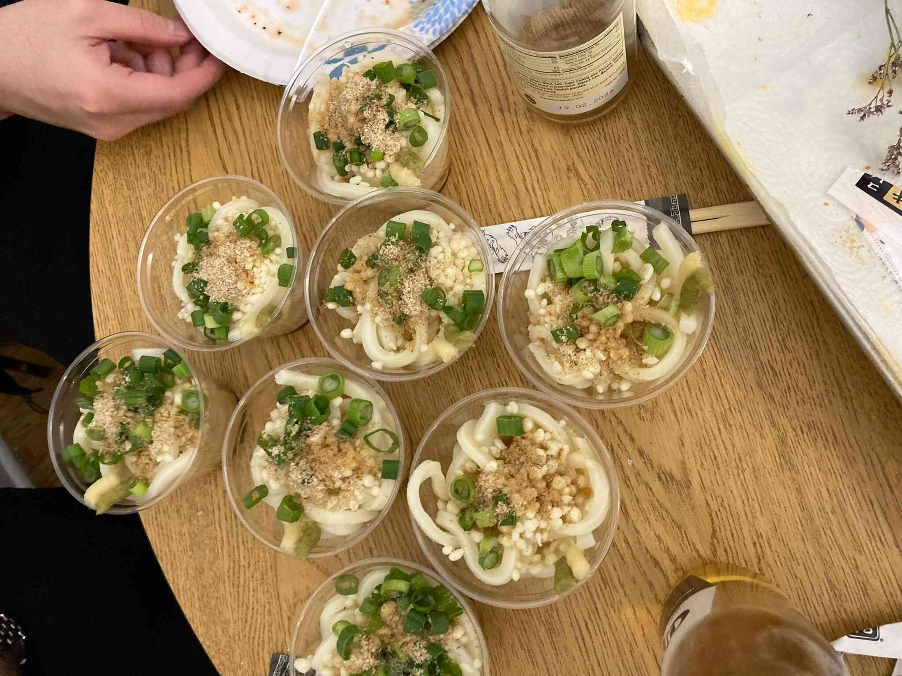
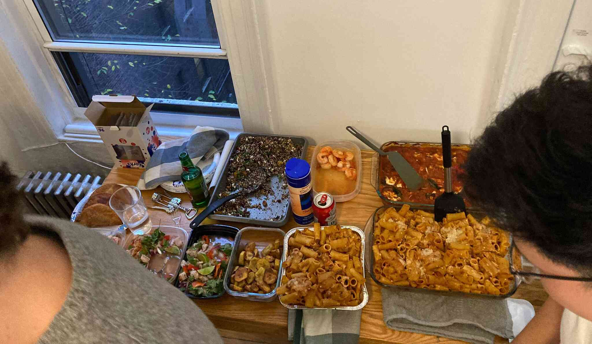
我自己則是做了三杯雞（其實還有肉鬆麵包，但是銷路不佳⋯，我覺得主要問題是這邊的美乃滋都是偏酸的，找不太到台灣的那種沙拉醬），如圖：

看起來是有模有樣啦（自己說，哈哈哈），而且最後被吃個精光，還有義大利人跑來問我怎麼做的，這應該是料理界最高的表揚了吧，呵呵。我還有圖片證明真的很熱銷：

除了 Friendsgiving 之外，我們國際食物巡禮到俄羅斯的時候我們的俄羅斯同學邀請我們到他家吃他準備的東西，有提魚沙拉、魚子醬、羅宋湯⋯⋯各各都是不得了的菜品。

而且我們俄羅斯同學還有一個四歲的女兒，在他家的時候我好像花很多時間玩她女兒的玩具，跟個自閉兒一樣⋯。
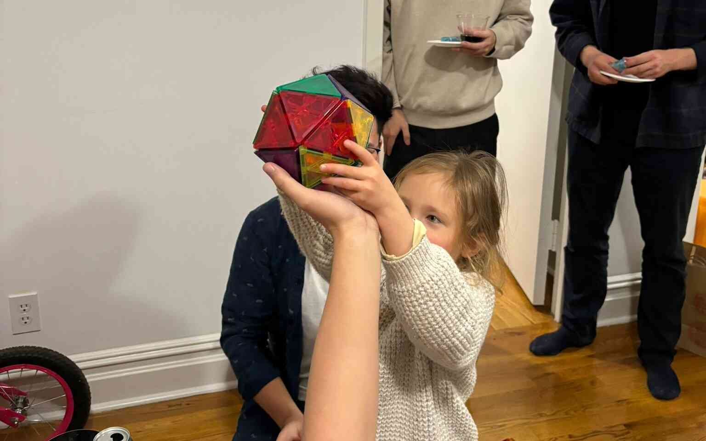
其實感恩節說穿了就是溫書假，因為放完感恩節之後上一週的課之後馬上就要期末考了。在期末考之前，我特地跑去看我們系上的足球友誼賽，去之前先去吃哥大附近很有名的匈牙利糕餅店的早餐，跟西班牙同學的一個今年上 job market 的麻省理工朋友聊天：
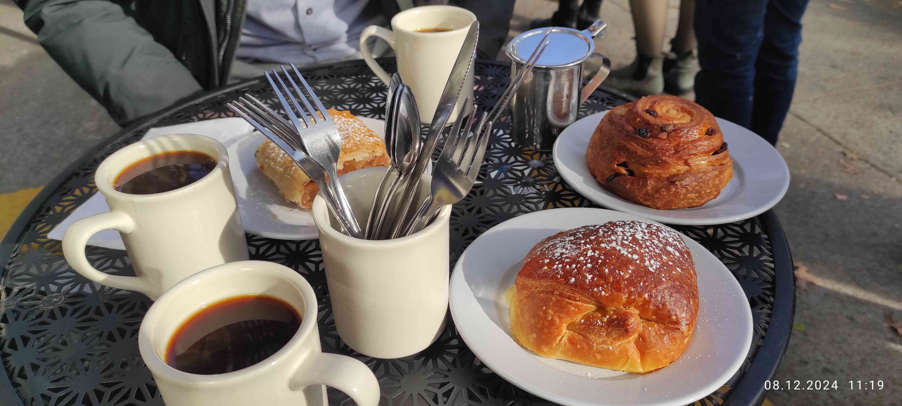
吃完之後就驅車去球場，這次去我第一次知道原來在曼哈頓的最北端有一個美式足球場。坐地鐵大概要半個小時才到得了。

到這麼北端就補教不像是在紐約了，旁邊有更多樹木，房子也變得稀疏。而且我發現跟之前在籃球場看到的一樣，哥大已經好就沒有在常春藤連盟裡面贏得美式足球比賽了，上次贏都已經是 1960 年代的事了，不知道還哪來的臉面掛著，哈哈哈。
期末考之前的活動之二是去聽我們奧地利同學的期末合唱團演出。地點是在哥大學校裡面的小教堂，說實話頗爲正式：

但是不知道是因為教堂設計的關係還是怎麼樣，感覺回音特別大，聲音很不集中，所以音效沒有非常好。但是某位歐洲來的同學還是笑這說：「終於！在美國終於有些有文化的地方了！」
然後就是，嗯，期末考。我經驗總結一下：
所以好像也沒啥結論，結論就是我覺得總體真的是很有趣，像是 Micro Theory 那種有趣，但是感覺自己不太適合，沒有那個直覺（還是要培養，誒？）。另外是感覺自己沒有說很認真在準備，期末靠前那周其實大部分時間都在自己房間鬼混。雖然說同學說我很認真，但是自己覺得不過就是寫作業的時候認真一下而已，這個學期都沒有很認真的讀過教科書。啊對，我根本就是地下計量助教。禮拜五的計量期末考，我在禮拜一跟禮拜二兩天前前後後花了大概八個小時帶幾個同學把所有計量全部順過一次。感覺這樣應該是功德圓滿了吧，大助教都沒有我認真，呵呵。
期末考完的第一個團體活動就是玩交換禮物！那天是下午大概四點考完，然後約五點在每同學家中交換禮物。最後一科考的是個論，因為有人實在是太暴氣，直接拿個論考卷都做包裝紙包禮物，快笑死。現在有交換禮物專用的 App 真的很方便，可以在上面說自己喜歡什麼。我在我的上面列了兩個毫不相關的東西：《漢納・鄂蘭與以賽雅・柏林》跟一個看起來很呆的鵝。顯然地，我比較喜歡的禮物是這個：

有一美國同學說我的氣質跟這隻鵝很匹配？或許吧，如果真的是這樣的話，這隻鵝就是我在紐約的吉祥物了～
隔天的行程滿有趣的，芬蘭人找到一家在紐約有超過一百年歷史的桑拿，是俄羅斯跟土耳其風格的，所以據他所說跟芬蘭的有一點不一樣。同時也是他生日，所以我們一些人就跟他一起去。裡面有六七間不同風格的桑拿，還有冰池跟陽台，我們一待就是四個小時（因為進去一次 60 鎂好貴要回本），皮都要太爛了，但是確實是滿舒服的，裡面有很多人高馬大的俄羅斯兄弟，還有真的用柴燒的爐子，而且建築外觀就跟普通的公寓差不多，非常不可思議。照理來說去玩桑拿的下一個行程應該就是去睡覺了（結束之後感覺超累），但是我們馬不停蹄到一家喬治亞風味餐廳，去吃一個據說很有名的東西：麵包裡面有融化的起司、奶油和雞蛋。嗯，吃起來跟披薩沒啥區別。
隔天又有同學從遙遠的西岸來找我（期末考結束之後真的是行程滿檔），跟著他的還有他的一個日本同學，就跟台灣人都互相認識一樣，日本人也都互相認識，所以我的日本同學也跟著一起紐約巡禮，我就理所當然的成為紐約地陪。其實上次耶魯的陪有來的時候就已經當過一次專業嚮導了，再上次也勉強算是第一次當哥大校區解說員。現在紐約地標該怎麼走，什麼東西比較有趣，怎麼樣走比較順都完全掌握了。上次從哥大校園出發，走路跨過中央公園到第五大道，往下到中國城吃午餐（有點髒但是就是因為有點髒才好吃的燒臘），
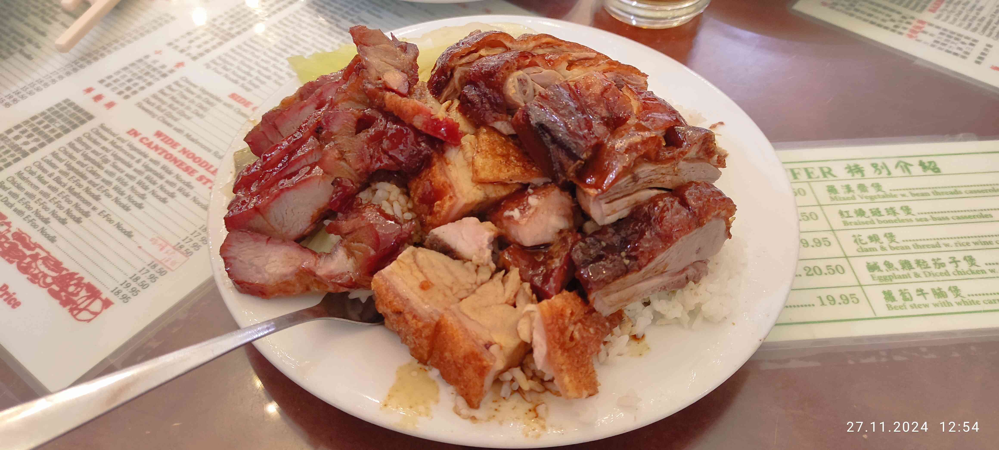
再到最南端的金融區，最後再做渡輪到布魯克林拍照吃晚餐。這次大概反過來，先橫跨布魯克林大橋，在做船到金融區，往上到第五大道吃午餐（道地日料，訂位用日文），回到哥大參觀校園，最後到大都會美術館。當然途中一定要路過鼎鼎大名了洛克斐勒聖誕樹：
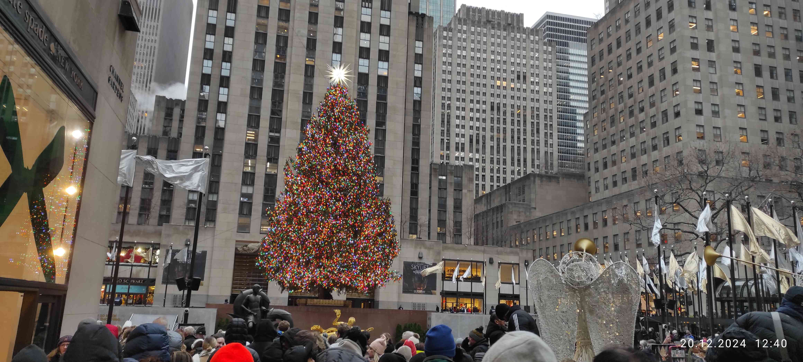
一天走四萬部的奇蹟。下次開始有人要來紐約要我帶路要開始收費了。去布魯克林大橋那天超冷，算是紐約今天第一次下雪，但實則雨雪交加，很想死。隔天就真的下雪了，非常漂亮。
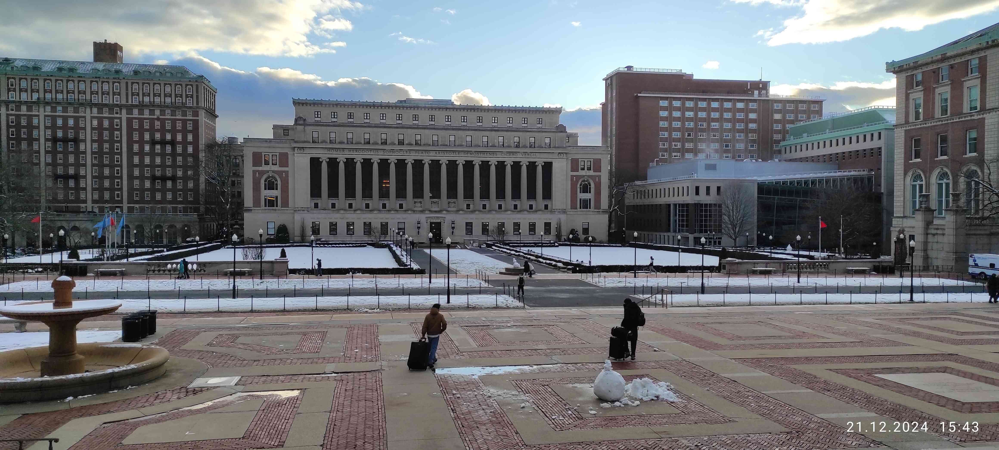
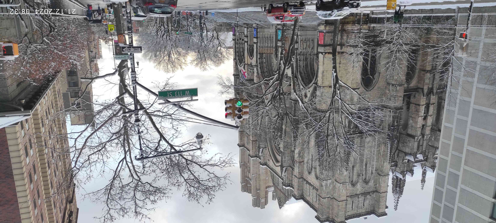
巡禮到哥大校園的時候發生一件有趣的事：我們一起進到學校裡面的一家咖啡店買咖啡，店員是一個黑人女性，他好奇的看我們都清一色是亞洲面孔，就問我們說我們過不過聖誕節。這個時候加州理工的日本同學就笑了，但是這個時候店員就不樂意了，說他只是好奇，有什麼好笑的？日本同學就有點愣住了，不太知道怎麼回答。我就出來打圓場，開始跟店員喇賽，說到他自己也不過聖誕節所以好奇，也聊到放假各自要去哪裡之類的，還調侃另一個日本同學說臉怎麼這麼嚴肅很像是 CEO，最後當然要以 first bump 結尾，還送我一塊蛋糕。對我來說他就是那種非常和善的黑人大媽，在紐約是稀疏平常。事後出店的時候日本同學就問我剛剛那種情況如何應對，我就說紐約人是面惡心善，講話可能比較直接或是喜怒形於色，但是人基本上都不錯。他就說在加州，大家去起來很友善，但是其實都只是表面功夫，像是遇到這種情況通常是敬而遠之。之前我也聽說過這種現象，但是這次有人直接驗證，真的是再次顯現紐約果然是最棒的城市無誤（？）
最後搖搭飛機前兩天去看紐約植物園的模型火車展。不但有模型火車，還有用植物握成的紐約各種地標，真的很讚。當天跟班上的馬來西亞同學一起去，看到一半的時候還遇到班上的印度同學。那天去為一個缺點就是真的太冷了，冷到手機螢幕都變慢了（真的！），原本想說看完火車之後可以到戶外看看，但是最後買了簡單的紀念品之後就匆匆離去。
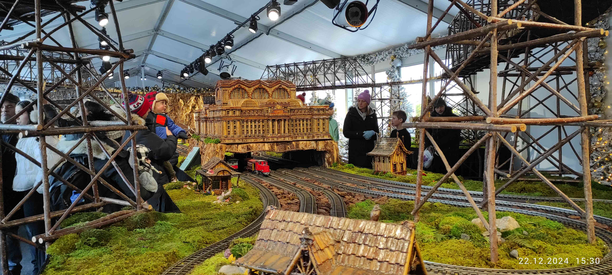
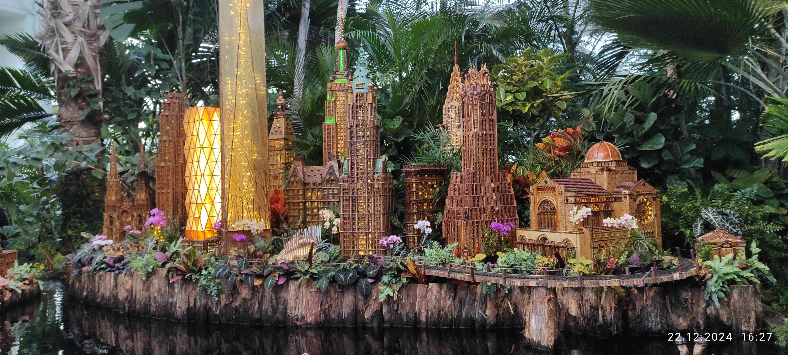
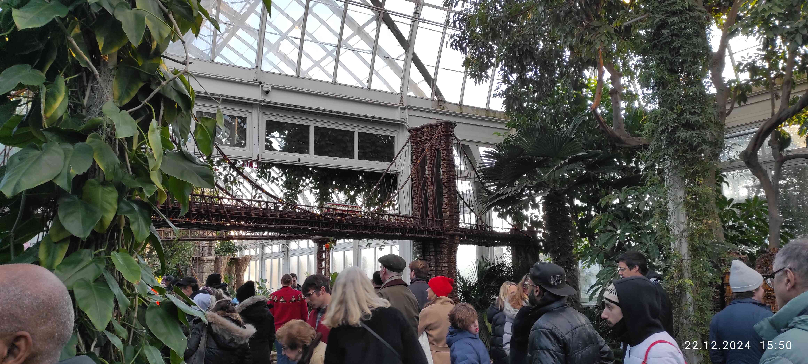
好，乾，最後要說到我現的處境。從來紐約之前就聽說紐澤西很破，又帶賽（當然，超級天龍人觀點）。坐飛機前三天第一次到紐澤西吃個東西，覺得這個地方真的不比紐約，不太想再來（當然，超級天龍人觀點）。但是我就是這麼賽，原本 24 號下午五點的飛機從紐澤西出發，經過西雅圖轉機到台灣，台灣時間 26 號早上，完美。結果昨天我的已經過完安檢了，人都已經在登機門口了，然後在飛機起飛前兩個小時跟我說取消？？？原本還期待說會不會聖誕夜航空公司有準備特別的餐點，現在都不用想了。原本想說：「好，取消就取消，大不了過幾天的飛機。」結果後來航空公司跟我說改成隔天早上九點的飛機，這就代表我從紐澤西要先回帶曼哈頓的宿舍時就已經七點多要八點了，然後因為是聖誕夜怕叫不到 Uber，只能半夜三點就爬起來做固定班表到紐澤西的火車。最後幸好 Uber 司機有出現，不用扛行李上上下下。到機場時間充裕，雖然累是累了一點但是還算是從容，只在 Instagram 上小抱怨一下（萬年沒用的限動就這樣被啟動了），但是結果到登機的時候發現不知道為什麼那邊的轉機有問題，所以不讓我登機。而且因為太早所以西岸那邊櫃檯還沒有開聯繫不到人，搞了半天最後才說讓我搭下午四點的飛機到洛杉磯。因為早早就 check in，所以托運行李中午就莫名其妙被寄過來，等一下落地之後還要先跑去找。可能是真的睡太少，連破大防了力氣都沒有，工作人員跟我解釋的時候我也只是一直回答「嗯」。但是剛剛在機場真的是越想越氣，昨天說好的今天早上突然跟我說不行，感覺就是空公司昨天沒有真的把票訂下來，結果今天大出包。原本行幫取消就算了，畢竟昨天好像很多航空公司都有系統問題，但是今天又讓我在機場乾等 12 小時航空公司真的是責無旁貸。如果知道早上的票有可能有問題，那昨天就跟我說改簽今天下午沒問題啊，至少讓我回去聖誕夜睡個好覺。
現在在飛機上也是越看越氣，看看後續怎麼處理吧。目前拿到的補張只有一張 12 鎂的餐券，在機場只購買一片什麼料都沒有的起司披薩還有一瓶可樂。至少昨天聖誕夜回去我室友的女朋友剛好烤了好吃的巧克力餅乾就請我吃了兩片，不然真的賭爛到不行。於戲哀哉，希望等一下整得到中午就飛過去的行李。台灣見。

坐飛機帶賽的事情仍有一小段後續： 2025-01-18
要飛前一天發現航空公司以為我之前在西雅圖 no
show，因為之前搞事的航空公司沒有通知接下來的航空公司。也可能我才疏學淺，不知道這種情況要跟自己跟客服說。反正今天臨櫃辦登機才把事情擺平。而且這班是跟韓國瑜一起搭，滿有趣的。
這次回紐約一切都有種莫名其妙的熟悉感，明明只菜這邊還待不到半年，卻可以好像一見如故一樣輕易地找到該去的地鐵站，或是不用想就知道用完的衛生紙要走到宿舍附近的藥局買最便宜。但是突然說英文又有點不習慣，頭幾天遇到同學第一句就是抱怨「Now I have to speak this godforsaken language again, sad…」。
回到紐約第一個活動是去 Jazz Bar。雖然說是紐約必要活動，但是拖到現在才去。

氛圍不錯，但是我只能說不是非常合我胃口，我實在是沒有太大興趣只在那邊聽音樂，但是想要去的同學都是喜歡聽爵士樂的，所以好像也不太適合一直講話（而且我也不是非常喜歡聊天，呵呵）。反正至少現在我能說我去過了。而且去的那天雪超大（積雪不後就是了），打在臉上超有感那種，真的是從去年到現在第一次有真的被冷到。
另外一個明明就是必去景點但是遲遲沒去的就是 MoMA。必須說比起大都會博物館 MoMA 讓我驚艷非常多，原因是大都會更像是「博物館」，也就是說什麼雜七雜八的東西都有，所以上次抱著參觀「美國的羅浮宮」的期待完全落空，反而更像是「美國大英博物館」。但是 MoMA 就真的是「美國的羅浮宮」，裡面收藏的都是一流藝術家的一流作品。隨便轉頭就看到超有名的畢卡索、克林姆、米羅、達利，族繁不及備載。還有看到杜象的真跡，不得了了：
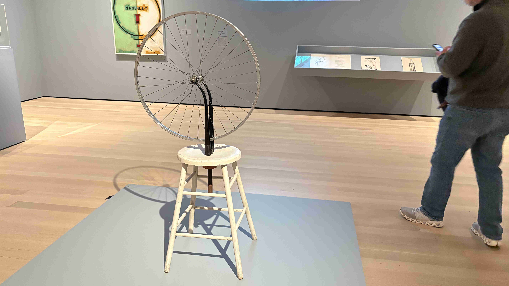
滿好笑的，這個東西現在看還是跟垃圾一樣，在博物館裡面也沒什麼人駐足觀看。看到之前出現在美術課本裡面的垃圾現在出現在我面前實在是滿有趣的。
又要開始上課感覺真累，沒有像是上個學期初來乍到的新鮮感跟衝勁了。這學期最有趣的課是一堂叫做 Perspectives 的課，這堂課的內容就是聽 Stiglitz（還有另外一個教授）講說他覺得該怎麼做經濟學：

這張是上課前拍的所以人很少。第一次聽真的是很好笑，畢竟要找到比 Stiglitz 更大咖的人基本上不太可能，所以他講話基本上就是一個張口就來（但是你也不太能說他沒道理？）的節奏。以下是我有印象他講過的幾個神秘故事（或是奇怪的個人意見）：
嗯，第一次上課覺得新鮮，但是聽幾次就累了⋯ 反正就是一個大左派，上課基本上不是嘴一下川普就是嘴一下芝加哥。反正就是聽一個老人講古，感覺有緩緩朝向老番癲的趨勢，但是你又講不過他，畢竟有得過諾貝爾獎的人確實不簡單，聽起來張口就還的敘述如果你真的問有什麼證據他又可以拿他發在 QJE 的 paper 來砸你，真可怕。班上就有人戲稱其實這堂課只有 Perspective，沒有 Perspectives。
好像是第一次沒有跟家人過年，有種奇怪的感覺。來之前特別帶了紙跟毛筆幫自己宿舍的門寫個東西：

除此之外還有跟班上的中國同學去吃飯，點了個芋頭鮮奶，超爆難喝，但是菜不錯吃。原本有台灣同學會的火鍋，但是因為我是世界級邊緣人所以連報名資訊都不知道所以就沒去成，下次吧。
學校裡面也出現不少春節裝飾，像是我在學校食堂裡（也是我第一次去學校的食堂）看到這個：
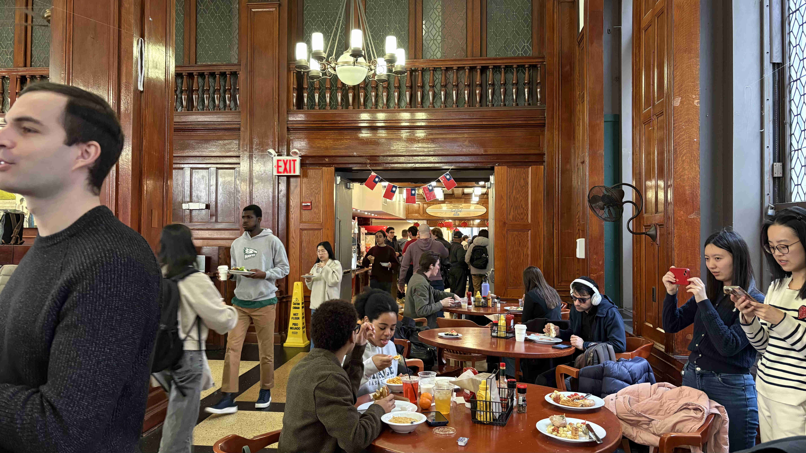
還沒出現中國同學把這個扯下來有點意外。但是我看到處都是把春節翻譯成「Lunar New Year」，甚至連班上的智利同學都跑來問我是不是覺得要講「Lunar New Year」比較好，因為不只有 “Chinese” 會過春節。我的回答如下：
我自己是強烈地覺得講 Lunar New Year 一點道理都沒有，首先農曆是陰陽合曆，所以講 Lunar 不正錯，再者縱使是陰曆也不代表過節時間跟農曆一樣，像是伊斯蘭曆就是陰曆，印度曆是陽曆，過節的時間都不相同。所以硬是要說成 Lunar New Year 不但不正確，還講得好像全世界只要用陰曆就過春節。農曆新年既然發源自中國叫做 Chinese New Year 當然沒問題。
反正我就跟他說這個，嗯，消消氣放個學餐照片：

中規中矩。據說如果沒有買 meal plan 的話一餐要花 17 鎂，很不便宜，但是好處是吃到飽、不限時還可以外帶，所以走投無路可以來這邊（？）我會說「據說」是因為我會進來吃是因為有個活動可以讓你免費進來吃，這個活動是「進來食堂跟陌生人討論選舉、時事或任何政治話題」。我跟我同學的策略就是跟他說我是要來參加活動，然後進去之後就去坐其他桌，呵呵。出來的時候我還偷了幾根香蕉（如上圖），呵呵。
最後附上前體天的午餐照，覺得上個學期幾乎每次都是主照燒雞腿實在是不太行，應該要健康一點。我宿舍附近還找買得到紫米真感動，可以開低 GI 廚房了。